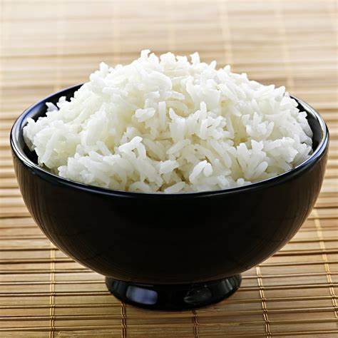
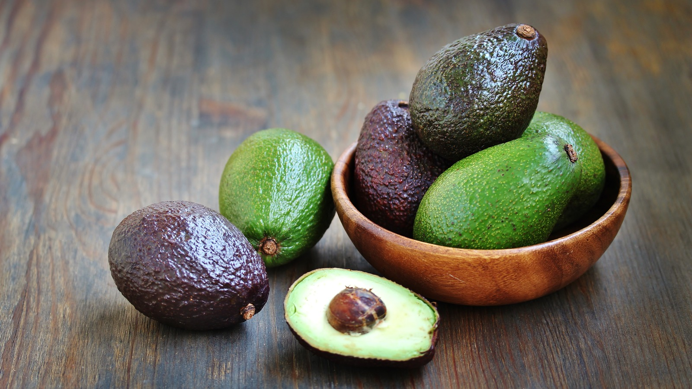

CARBOHYDRETA
carbohydrates! These macronutrients are a primary source of energy for your body.
They can be classified into simple carbohydrates (sugars) and complex carbohydrates (starches and fibers).
Examples of foods rich in carbohydrates include.
Rice is one of the most widely consumed staple foods in the world and comes in several varieties including white, brown, and wild rice.
It's a significant source of carbohydrates, providing energy and essential nutrients.

Spaghetti Spaghetti is a popular type of pasta made from wheat and water,
often served with various sauces and toppings.
PROTAIN
Protein is one of the essential macronutrients that your body needs to function properly. It plays a critical role in building and repairing tissues, making enzymes and hormones, and supporting overall health. Protein is made up of amino acids, which are the building blocks of your body's cells and muscles.
Here are a few sources of protein:
Meat is a rich source of protein and other essential nutrients like vitamins and minerals. There are various types of meat, each with unique flavors and nutritional profiles. Here are some common types of meat and their benefits:
Chicken : A versatile and lean protein source. It is rich in B vitamins, such as niacin and B6, which support energy metabolism and brain health.

Beef: Contains high levels of iron, zinc, and vitamin B12. It supports muscle growth, immune function, and red blood cell formation. Opt for lean cuts to reduce fat intake
Fish and seafood are fantastic sources of high-quality protein and essential nutrients. They come with various health benefits and can be prepared in numerous delicious ways. Here are some popular types of fish and seafood, along with their benefits:
Salmon: Rich in omega-3 fatty acids, which are beneficial for heart and brain health. It's also a great source of protein, vitamins B12, and D.
.jpg)
Tuna : A lean protein source with omega-3s, vitamin B12, and selenium. It's often enjoyed in salads, sandwiches, or as sushi.
.jpg)
WATER
Water is a fundamental substance essential for all known forms of life. Here's a breakdown of key information about it:
* Chemical Composition:
* Water is a chemical compound with the formula H₂O, meaning each molecule consists of two hydrogen atoms and one oxygen atom.
States of Matter:
It can exist in three states:
* Liquid (water)
* Solid (ice)
* Gas (water vapor)
* Importance:
* It's crucial for biological processes in all living organisms.
* It acts as a solvent, dissolving many substances.
* It plays a vital role in Earth's climate and weather patterns.
* Properties:
* Pure water is generally tasteless, odorless, and nearly colorless.
* It has unique properties like high surface tension and a high specific heat capacity.
.jpg)
FAT AND OIL
Fats and Oils
1. What They Are:
Fats: They are solid at room temperature and are found in both animal and plant sources.
Examples include butter, lard, and ghee.
Oils: They are liquid at room temperature and primarily come from plant sources.
Common examples include olive oil, sunflower oil, and coconut oil.
2. TYPES
Saturated Fats: Found in animal products and some tropical oils. They're solid at room temperature.
Unsaturated Fats: Divided into:
Monounsaturated Fats: Found in olive oil, avocados, and nuts.

Polyunsaturated Fats: Includes omega-3 and omega-6 fatty acids, found in fish, flaxseeds, and walnuts.
Trans Fats: Artificially created through hydrogenation. They are found in some processed foods and are considered harmful to health.
VITAMIN
Vitamins are essential micronutrients that our bodies need to function properly. They play various roles in maintaining health, supporting growth, and preventing diseases.
Types of Vitamins:
Fat-Soluble Vitamins (Stored in the body's fatty tissues):
Vitamin A: Important for vision, immune function, and skin health. Found in carrots, sweet potatoes, and spinach.
Vitamin D: Crucial for bone health and immune support. Obtained from sunlight exposure, fortified foods, and fatty fish.
Vitamin E: Acts as an antioxidant, protecting cells from damage. Present in nuts, seeds, and vegetable oils.
Vitamin K: Essential for blood clotting and bone health. Found in leafy greens like kale and spinach.
MINERAL SALT
Mineral salts, also known simply as minerals, are inorganic substances that play crucial roles in various bodily functions. They are essential nutrients that our bodies need in small amounts for optimal health.
Key Mineral Salts and Their Functions:
Calcium (Ca):
Function:
Vital for bone and teeth formation, muscle contraction, blood clotting, and nerve function.
Sources: Dairy products, leafy green vegetables, tofu, and fortified foods.
Phosphorus (P):
Function: Works with calcium to build strong bones and teeth, involved in energy production and storage, and is a part of DNA and RNA.
Sources: Meat, fish, poultry, dairy products, nuts, and seeds.
Potassium (K):
Function:
Regulates fluid balance, muscle contractions, and nerve signals. It also helps maintain proper heart function.
Sources: Bananas, oranges, potatoes, spinach, and beans.
.jpg)
Sodium (Na):
Function:
Maintains fluid balance, supports nerve function, and muscle contractions.
Sources: Table salt, processed foods, and natural sources like celery and beets.
.jpg)
Magnesium (Mg):
Function:
Involved in over 300 biochemical reactions in the body, including energy production, muscle and nerve function, and bone health.
Sources: Nuts, seeds, whole grains, green leafy vegetables, and fish.
.jpg)
Iron (Fe):
Function:
Essential for the production of hemoglobin (which carries oxygen in the blood) and myoglobin (which stores oxygen in muscles).
Sources: Red meat, poultry, fish, lentils, beans, and fortified cereals.
Zinc (Zn):
Function:
Supports immune function, wound healing, DNA synthesis, and cell division.
Sources: Meat, shellfish, dairy products, nuts, and seeds.
Iodine (I):
Function:
Necessary for the production of thyroid hormones, which regulate metabolism.
Sources: Iodized salt, seafood, dairy products, and eggs.
Selenium (Se):
Function:
Acts as an antioxidant, supports thyroid function, and boosts the immune system.
Sources: Brazil nuts, seafood, meat, and eggs.
Copper (Cu):
Function:
Helps with iron absorption, supports the immune system, and aids in the formation of red blood cells.
Sources: Shellfish, nuts, seeds, and whole grains.